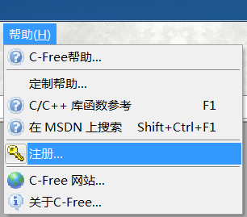
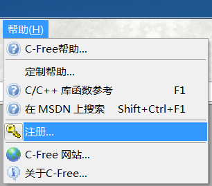

C-Free 5.0下载地址和激活教程（图解）
C-Free是一款国产的C、C++开发工具，堪称神器，让你爱不释手。
如果你受够了Visual Studio的庞大臃肿，Visual C++ 6.0在Win7、Win8下的兼容性问题，那么C-Free将是一个让你惊喜的选择。C-Free整个软件才14M，非常轻巧，安装简单，可以自由切换编译器。
C-Free最新版本是5.0，注册需要80RMB，可以免费试用30天，过期不注册将无法使用。虽然本教程提供了，但是如果你不缺银子，还是为国产软件做点贡献，购买正版吧。
C-Free也提供了永久免费版，可以无限使用，版本号为4.0。当然功能多少会有折扣。
C-Free支持多种编译器，可以轻松地编辑、编译、连接、运行、调试C/C++程序。
C-Free 5 主要有以下特性：
C-Free 4.0（永久免费版）下载地址：http://pan.baidu.com/s/1qXOb87M 提取密码：hrxx
C-Free 4.0（永久免费版）下载地址：https://yunpan.cn/cMkDwxAbeRWQR（提取码：77ed）
 软件，如下图所示：
软件，如下图所示：

下面提供了一组C-Free 5.0的，如果注册失败，请百度其他的（截止到2014年06月11日，网上公开的有两组，经笔者验证，只有下面这一组有效）。
用户名：tianfang
电子邮件：quart@163.com
：2NnUqd3shO2agta0xNjcusfK1LXO
如果最终没有找到有效的，请到万能的淘宝吧，10元以下搞定。
如果你受够了Visual Studio的庞大臃肿，Visual C++ 6.0在Win7、Win8下的兼容性问题，那么C-Free将是一个让你惊喜的选择。C-Free整个软件才14M，非常轻巧，安装简单，可以自由切换编译器。
C-Free最新版本是5.0，注册需要80RMB，可以免费试用30天，过期不注册将无法使用。虽然本教程提供了，但是如果你不缺银子，还是为国产软件做点贡献，购买正版吧。
C-Free也提供了永久免费版，可以无限使用，版本号为4.0。当然功能多少会有折扣。
C-Free支持多种编译器，可以轻松地编辑、编译、连接、运行、调试C/C++程序。
C-Free 5 主要有以下特性：
-
支持多编译器，可以配置添加其他编译器。目前支持的编译器类型：
- MinGW 2.95/3.x/4.x/5.0
- Cygwin
- Borland C++ Compiler
- Microsoft C++ Compiler
- Open Watcom C/C++
- Digital Mars C/C++
- Ch Interpreter
- Lcc-Win32
- Intel C++ Compiler
- 增强的C/C++语法加亮器，(可加亮函数名，类型名，常量名等)；
- 增强的智能输入功能；
- 可添加语言加亮器，支持其他编程语言；
- 可添加工程类型，可定制其他的工程向导；
- 完善的代码定位功能(查找声明、实现和引用)；
- 代码完成功能和函数参数提示功能；
- 能够列出代码文件中包含的所有符号(函数、类/结构、变量等)；
- 帮助手册完善，附带C、C++函数库；
- 彩色、带语法加亮打印功能；
- 在调试时显示控制台窗口；
- 工程转化功能，可将其他类型的工程转化为C-Free格式的工程，并在C-Free中打开。
百度网盘
C-Free 5.0（专业版，需要付费）下载地址：http://pan.baidu.com/s/1cBTdN4 提取密码：uqmfC-Free 4.0（永久免费版）下载地址：http://pan.baidu.com/s/1qXOb87M 提取密码：hrxx
360云盘
C-Free 5.0（专业版，需要付费）下载地址：https://yunpan.cn/cMkDyHQWwDLIP（提取码：0a68）C-Free 4.0（永久免费版）下载地址：https://yunpan.cn/cMkDwxAbeRWQR（提取码：77ed）
安装后的工作
安装软件后，选择“帮助->注册”菜单软件，如下图所示：
下面提供了一组C-Free 5.0的，如果注册失败，请百度其他的（截止到2014年06月11日，网上公开的有两组，经笔者验证，只有下面这一组有效）。
用户名：tianfang
电子邮件：quart@163.com
：2NnUqd3shO2agta0xNjcusfK1LXO
如果最终没有找到有效的，请到万能的淘宝
吧，10元以下搞定。关注公众号「站长严长生」，在手机上阅读所有教程，随时随地都能学习。内含一款搜索神器，免费下载全网书籍和视频。

微信扫码关注公众号